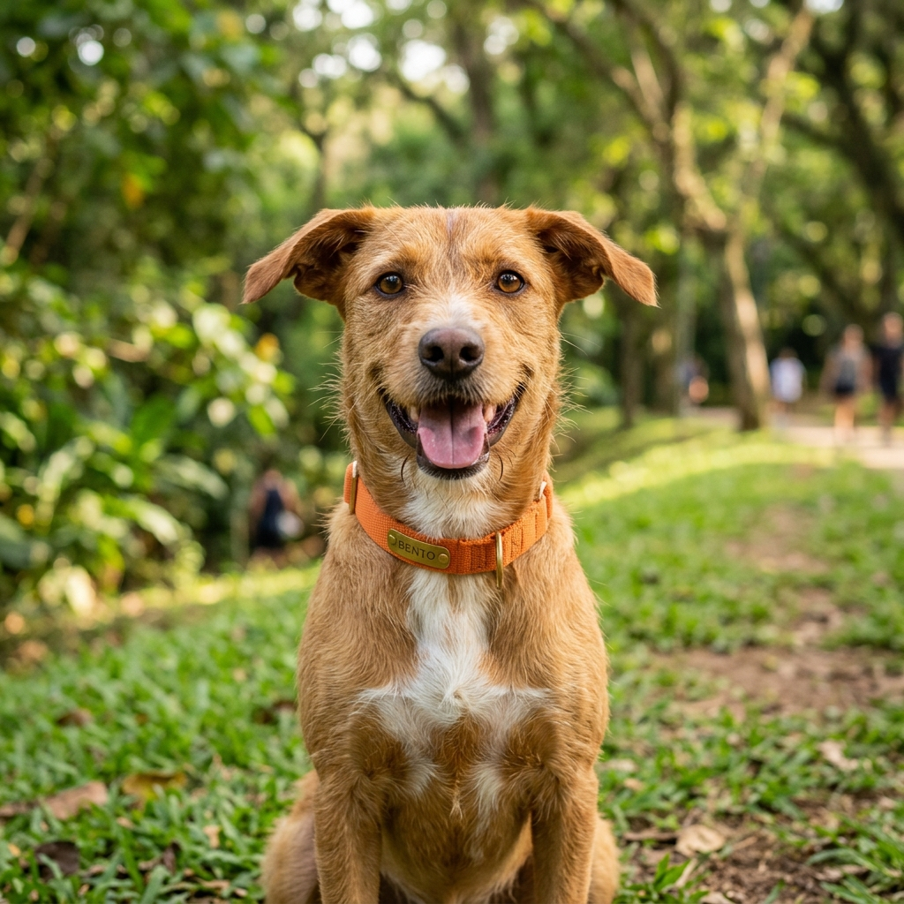
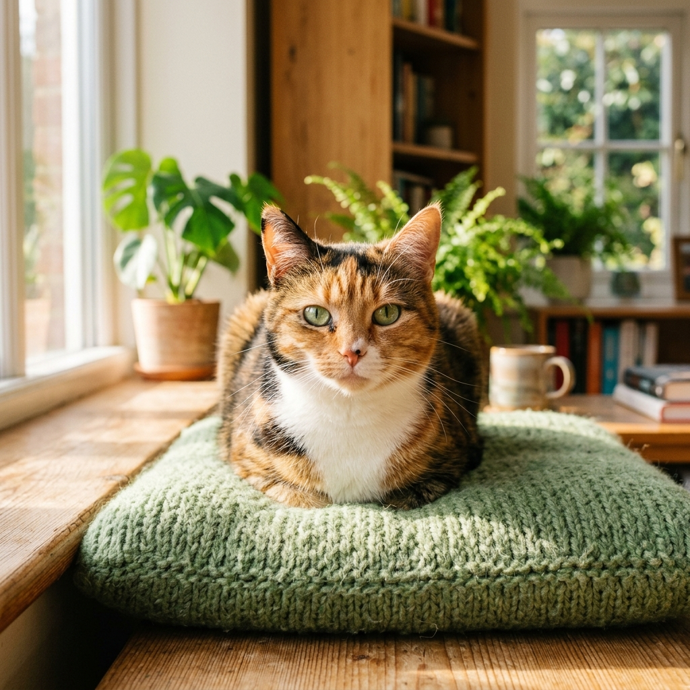
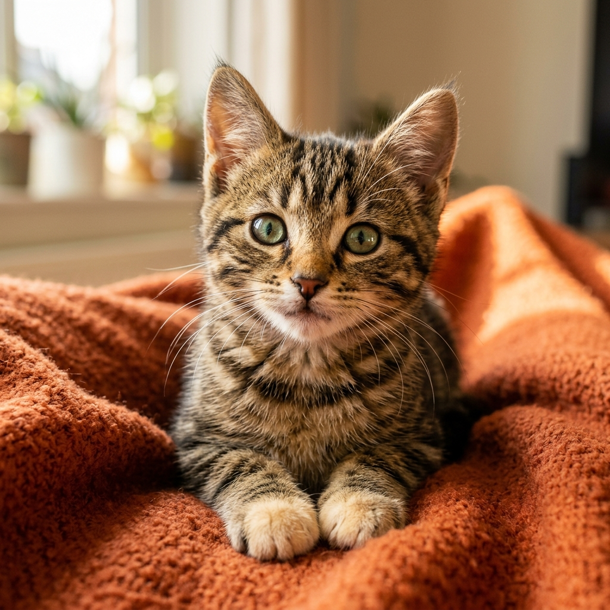

Cão • Porte MédioBento
1 ano e meioVira-lata caramelo muito dócil, brincalhão e sociável com crianças e outros pets.
Mais de 100 cães e gatos castrados, vacinados e cheios de carinho esperando por uma família na Grande Vitória.
Em parceria com protetores da Grande Vitória, o Pet Shop SENAC realiza a feira de adoção para dar um novo lar a animais resgatados. Conheça as 4 etapas simples e responsáveis para levar seu novo melhor amigo.
Visite o estacionamento do Shopping Vitória, interaja com os cães e gatos e encontre a conexão ideal para a sua família.
Bate-papo rápido com nossos veterinários para alinhar o espaço da sua casa ou apartamento com o porte e energia do pet.
Apresente RG, CPF e comprovante de residência na Grande Vitória. Adoção restrita a maiores de 18 anos.
Assine o termo de adoção responsável e retire seu pet acompanhado de um kit especial com ração e orientações.
Estes são alguns dos mais de 100 amigos de quatro patas que estarão no Shopping Vitória nos dias 7 e 8 de novembro.

Cão • Porte MédioVira-lata caramelo muito dócil, brincalhão e sociável com crianças e outros pets.

Gata • DócilTricolor calma e carinhosa, perfeita para apartamento com rede de proteção.
Filhotinho cheio de energia e alegria, pronto para alegrar seu lar.

Gato • JovemGatinho curioso e companheiro, adora carinho e se adapta com facilidade.
Ao adotar, você salva duas vidas: a do pet acolhido e a do próximo animal que poderá ser resgatado.
Av. Américo Buaiz, 200 - Enseada do Suá, Vitória - ES
Área de eventos no estacionamento aberto.
Informações rápidas para você se planejar para o evento.
Pessoas com idade igual ou superior a 18 anos, residentes na Grande Vitória (Vitória, Vila Velha, Serra, Cariacica e Viana). Apresente documento com foto (RG ou CNH), CPF e comprovante de residência.
Não! A adoção é 100% gratuita. Não cobramos qualquer valor.
Sim! Todos os animais adultos já são entregues castrados, vacinados e vermifugados. Para filhotes jovens, o adotante recebe voucher de castração gratuita garantida pelo Pet Shop SENAC.
Sim! Para gatos, é obrigatório possuir telas de proteção instaladas em janelas e varandas para garantir a segurança do felino.
Documento oficial com foto, comprovante de residência e caixa de transporte (para gatos) ou coleira/guia (para cães).